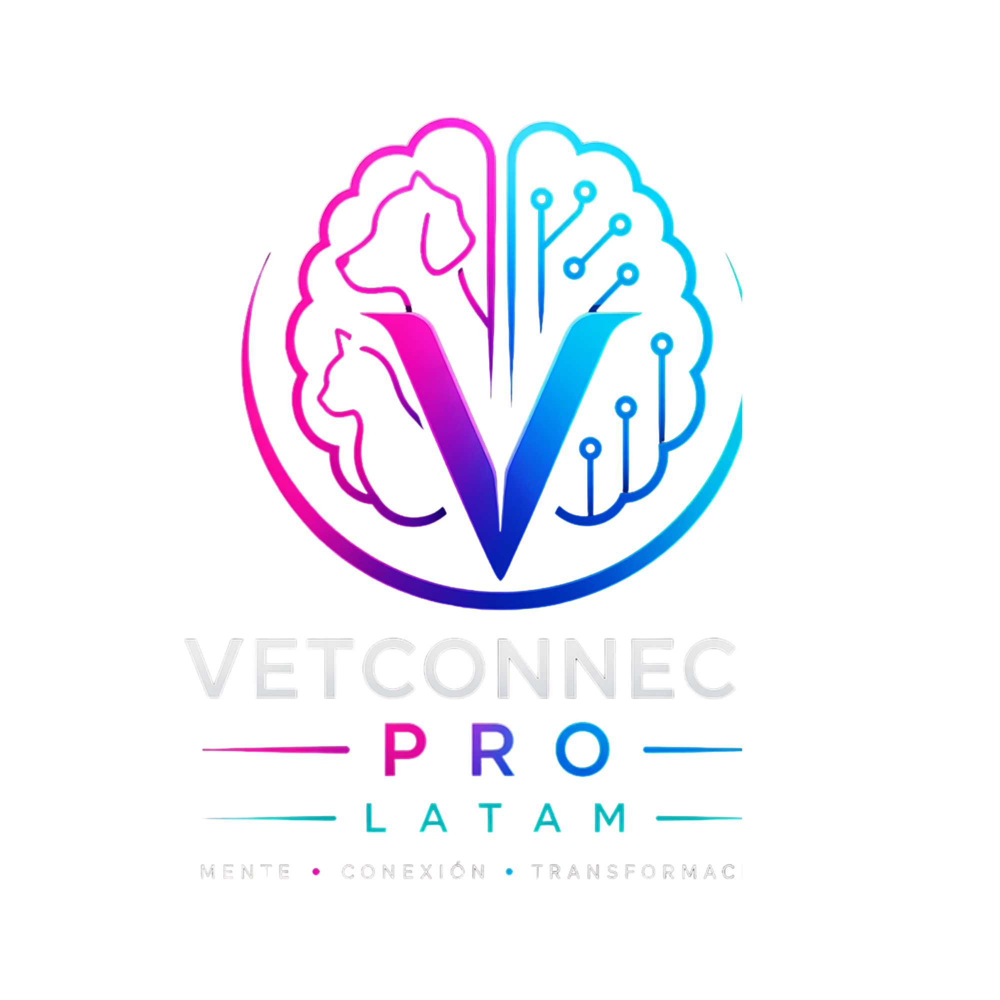

Metodología Propia · Validada en Campo Real
Metodología
Veterinario Alfa.
10 pilares.
Un sistema.
No es un curso de desarrollo personal genérico. Es un sistema construido desde adentro de la profesión veterinaria, validado en más de 11 años de práctica clínica real y empresarial en LATAM.
10Pilares del sistema
11+Años de validación real
LATAMDiseñado para nuestra realidad
